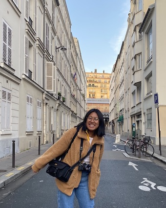

Je suis Andrée Cruto, j’ai 18 ans et étudiante en première année à EMLV. .
Andrée Cruto's InstagramJ’aime la photographie notamment la photo argentique.
J'aime agrandir mon capital culturel et visiter des musées ainsi que des expositions. L'art contemporain m'interesse beaucoup. Mon artiste favori est Jean-Michel Basquiat. Je suis allée voir son exposition à la fondation de Louis Vuitton en octobre 2018.
Je suis une personne qui voyage souvent. En effet, j'ai visité plusieurs pays tels que Hong Kong, les Philippines, l'Italie ect. En été 2020, je prévois d'aller en Corée du sud avec des amies.
J'apprécie énormément mes amis. Je sors souvent avec eux, ils sont comme une deuxième famille pour moi.